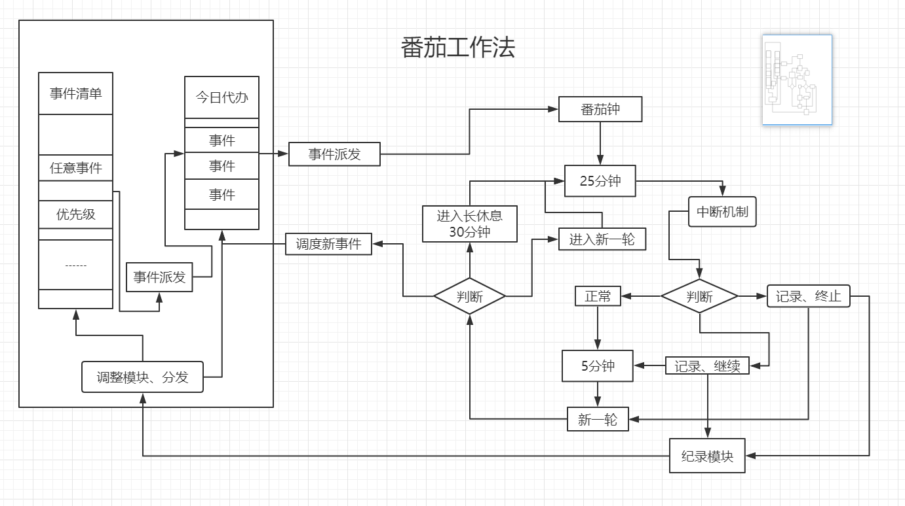

番茄工作法图解
豆瓣地址：番茄工作法图解
拖延症
要做的事情太多，要做的事情太复杂，时间还很长，先休息休息，想出一个最好的方案再行动……是不是有着各种各样的理由，各种各样的借口，就是不想去行动。
造成拖延的原因可以分为外部因素和内部因素。内部因素主要是因为懒于行动或者完美主义，外部因素主要就是周围的环境，需要处理的事情，以及手机等诱因。拖延所带来的自我欺骗，一定程度上可以缓解压力，但治标不治本，压力来自内部，治疗的良方就是找到项目的起跑线。
有没有一种非常简单的方法去减少拖延，专注当前事务呢，答案是有的。这本番茄工作法图解，介绍的就是一种简单的方法。而简单的方法，就是最容易坚持下去的方法，这样也就达到了减少拖延，提高专注力的目的。
极简番茄工作法
设定一个时间段（一般25分钟），在这个时间段内，集中精神，就只专注去做一件事情，时间到了，就休息一定时间（一般5分钟），如此循环，四个番茄钟后，进行一次长时间休息（一般半小时）。
理想状态 vs 现实状态
理想状态下，什么都是美好了，完美而顺利的完成任何一件事。
现实状态下，太真实了，无间断的外部干扰，无止境的诱惑，无休止的内心争斗，什么都不想做，除了做一条咸鱼。
同样，使用番茄工作法，也脱离不了现实环境，所以最好的办法，就是给自己的行为注入仪式感，同时减少周围的干扰。书中也有一部分内容在说这些。
拓展性
众所周知，一个简单的Hello Wrold程序，并不能做太多事情，它只能带你一窥程序世界的大门。
同样，一个极简的番茄工作法，也只是在你最初使用的时候有效，所以在实践的过程中，会添加一些其他的内容，作为补充，通过不断的实践反馈，才能最终找到适合自身情况下的方法。
书中，引入了“任务清单”，“今日代办”，“中断处理”，“时间预估”，“记录调整机制”，构建了一个较为健壮的番茄工作法。
一张番茄工作法流程图

最后
所想写的内容，在书中更为详细。
坚持下去，行动。不求拖延症能够完全解决，只求能够更好的对时间进行管理。